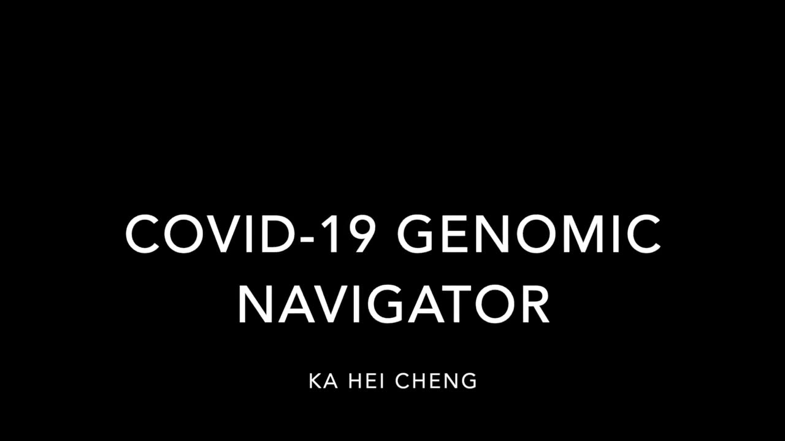

COVID-19 Genomic Navigator
COVID-19 Genomic Navigator
Author(s)
Ka Hei Cheng
PubPub Link
https://nime.pubpub.org/pub/zcv64g3n/draft?access=3jy88s0y
Abstract
COVID-19 Genomic Navigator makes use of a motion sensing glove to sonify the protein genomic data of COVID-19, which was extracted from The National Center for Biotechnology Information (NCBI) and Protein Data Bank (PDB). Three sets of data were selected in the project, including 7B3C, 7D4F, and 7KRP, which are all RNA-dependent RNA polymerase (RdRp) related. The PDB files show the structure of the proteins at the atomic and amino acid scale, which contributes to the multi-dimensional parameter mapping of the synthesized sounds. The three protein data sets distribute evenly in space while the motion sensing glove navigates and sonifies the data in both physical space and time synchronously.
Gesture recognition and dynamic time warping of the motion sensing glove are used to perform machine learning and to catalyze the sonification of the interaction between the different protein data. Both the protein genomic data and gestural data are reformatted and programmed to run into several synthesizers for audification and sonification. The data of five categorized gestures is labelled, recorded, analyzed, and trained in the machine learning model before the performance. Non-categorized gestures would also be used in musical expression alongside with the five categorized gestures to build the growth and development of the piece.
Requirements
Motion sensing glove with built-in accelerometer and gyroscope is used in the performance. It detects movement in X, Y, and Z axes, and sends the data to the control interface for the sonification. It requires Arduino to send the data to Max and Kyma software programs for the sonification process and set up for the motion sensing glove. Apart from that, the following equipment is needed for the live performance. (If the performance is virtual, a video of the performance could be provided. Or, it could be live-streamed with no additional equipment required.)
Audio Interface (MOTU M4)
MIDI controller (KORG nano Kontrolller)
Cables
MacBook Pro
Table
Program Description
COVID-19 Genomic Navigator is an electronic musical instrument that adopts a motion sensing glove to perform the sonification of COVID-19 protein genomic data. It uses categorized and non-categorized gestures to demonstrate the story of COVID-19. The categorized gestures are used in gesture recognition while the non-categorized gestures are used for musical expression and structural development of the piece.
Coronavirus has had an important impact on the globe and has been causing death and tragedy. All walks of life are struggling for a glimpse of light, and hope to end the ongoing battles of life and death.
7B3C shows the structure of elongating SARS-CoV-2 RdRp with Remdesivir while 7D4F shows the structure of COVID19 RdRp bound to suramin. Both Remdesivir and suramin are drugs that inhibit enzymatic activity of the protein and the replication and transcription of the RNA; whereas 7KRP is the structure that shows the backtracking and transcription of RNA in coronavirus. The contrasting role of the ‘protagonist’ and ‘antagonist’ is demonstrated through the piece because the differences in functions of the proteins builds up climactic contrast.
The sonification process of the “protagonist” and “antagonist” proteins are used to portray the story of the struggle and reflects the contemporary life of everyone. The contrast of the role would build up musical growth and development and trigger musical events through gesture recognition in machine learning model.
Media

▶Performance of COVID-19 Genomic Navigator
Ethics Statement
The project is supported by the Louisiana State University and is one of the research projects the author does in her PhD degree. The project has observed and followed the principles and codes of practice in designing new musical interfaces. It is guaranteed that no violation on the principle of accessibility, environmental and inclusion in the project. No potential conflicts of interest occur in the project.
Since the project adopts open-sourced genomic data and the music materials are based on a large database, it would create a sustainable artwork and other users could use the system with different set of genomic data to generate their desirable outcome.
The author would promote ethical research environment and uphold the standard in the statement.
Acknowledgements
[Omitted]